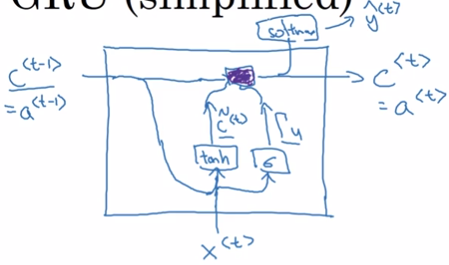
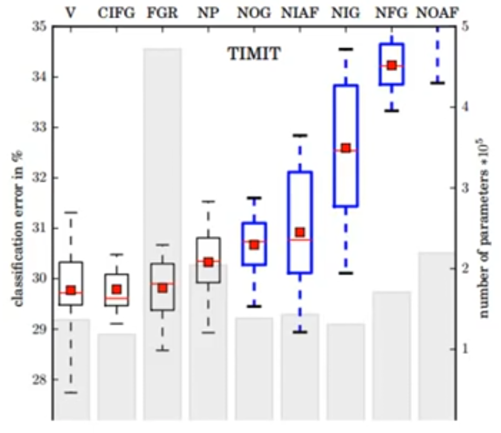

LSTM架构中哪些部分是真正必须的？
还可以设计哪些其他成功架构允许网络动态地控制不同单元的时间尺度和遗忘行为？
最近关于门控RNN的工作给出了这些问题的某些答案，其单元也被称为门控循环单元或GRU{cite?}。
与LSTM的主要区别是，单个门控单元同时控制遗忘因子和更新状态单元的决定。
[success]

更新公式如下：
hi(t)=ui(t−1)hi(t−1)+(1−ui(t−1))σ(bi+j∑Ui,jxj(t)+j∑Wi,jrj(t−1)hj(t−1)),
[success]
h = 更新门 h + (1 - 更新门) 输入
更新门相当于遗忘门，（1-更新门）相当于输入门。
更新门将遗忘门与输入门联动，相当于历史信息与当前信息的权衡。两者只有其一能较大的影响新的h。
问：输出门去哪了？
答：GRU中没有输出门。GRU和LSTM的一个区别就是，在GRU中，at=Ct。在LSTM中，at = 输出门 * Ct
“输入”中包含了复位门。
在其它操作中，通常把x与t-1的h合成一个大的向量。Gate对这个大的向量整体起作用。
而复位门只对输入起作用。
问：为什么要有复位门？
答：复位门代表了Ct与Ct−1的相关度。
其中u代表"更新"门，r表示"复位"门。
它们的值就如通常所定义的：
ui(t)=σ(biu+j∑Ui,juxj(t)+j∑Wi,juhj(t)),
和
ri(t)=σ(bir+j∑Ui,jrxj(t)+j∑Wi,jrhj(t)).
复位和更新门能独立地"忽略"状态向量的一部分。
[warning] [?] 这一段看不懂
更新门像条件渗漏累积器一样可以线性门控任意维度，从而选择将它复制（在sigmoid的一个极端）或完全由新的"目标状态"值（朝向渗漏累积器的收敛方向）替换并完全忽略它（在另一个极端）。
复位门控制当前状态中哪些部分用于计算下一个目标状态，在过去状态和未来状态之间引入了附加的非线性效应。
[success]
更新门将遗忘门与输入门联动，相当于历史信息与当前信息的权衡。两者只有其一能较大的影响新的h。
当u非常接近0时，Ct非常接近C(t−1)，因此 C能保留很久以前的信息。
GRU的效果
参数少了1/4，不容易发生过拟合。最终效果差不多。
Ng补充：GRU与LSTM的对比：
GRUC^t=tanh(Wc[r∗Ct−1,xt]+bc)u=σ(Wu[Ct−1,xt]+bu)r=⋯Ct=u∗C^t+(1−u)∗Ct−1at=CtLSTMC^t=tanh(Wc[at−1,xt]+bc)u=σ(Wu[at−1,xt]+bu)f=σ(Wf[at−1,xt]+bf)o=σ(Wo[at−1,xt]+bo)Ct=u∗C^t+f∗Ct−1at=o∗Ct
围绕这一主题可以设计更多的变种。
例如复位门（或遗忘门）的输出可以在多个隐藏单元间共享。
或者，全局门的乘积（覆盖一整组的单元，例如整一层）和一个局部门（每单元）可用于结合全局控制和局部控制。
然而，一些调查发现这些LSTM和GRU架构的变种，在广泛的任务中难以明显地同时击败这两个原始架构{cite?}。
{Greff-et-al-arxiv2015}发现其中的关键因素是遗忘门，而{Jozefowicz-et-al-ICML2015}发现向LSTM遗忘门加入1的偏置(由{Gers-et-al-2000}提倡)能让LSTM变得与已探索的最佳变种一样健壮。
[success] 各种LSTM变种性能的比较

(1) std LSTM works well
(2) 将forget gate和input gate联运，参数变少，平均性能没有下降
(3) 去掉peephold，参数量增加，性能没有明显下降
(4) forget gate和output gate对性能很重要。